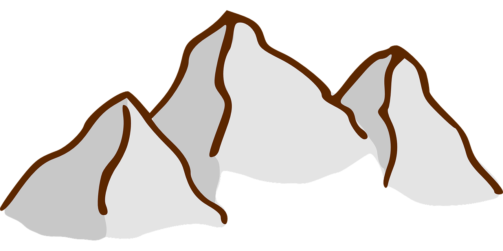
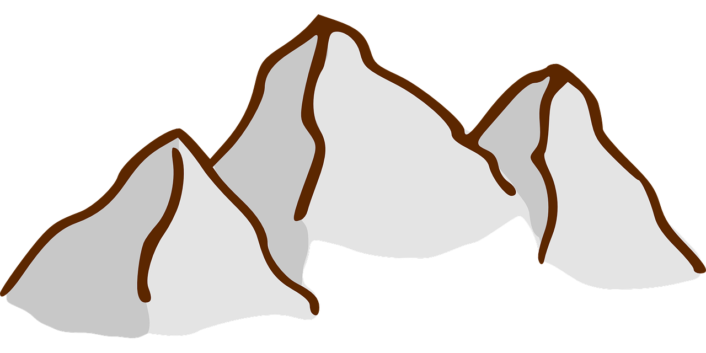

Je suis M. Abrighach
Un nouveau Programmeur

Un nouveau Programmeur


Je suis un ancien Auditeur Financier qui a décidé de réorienter sa vie professionnelle à un loisir.
Je vous présente mes compétences que j'ai acquéris jusqu'a maintenant, j'ai fais de l'économie depuis mon bac, et pendant mon cursus en université, j'ai commencé à travailler sur Google Adsense, le monde informatique me suivait toujours jusq'au cette année ou j'ai pris ma décision de me réorienter et devenir un vrai professionnelle en informatique.
Ici, je vous présente mes loisirs, ce que j'aime faire soit dans mon temps libre ou l'inverse, j'aime plutôt danser pour me recharger d'énergie, Coder pour faire un autre sort d'art, Lecture pour me cultiver, Randonnée pour vider mon esprit et Nager pour gagner ma santé.
Vous pouvez choisir n'importe quelle option parmis les suivantes.
CONTACTER MOI